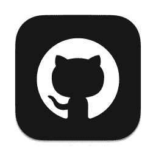
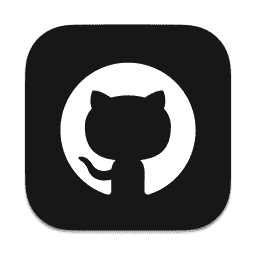

技术支持
组织声明
服务器没有收费项目，请各位玩家谨防上当受骗。
我们崇尚共产主义，但不是党派或政党，我们以空想社会主义作为指导思想。
服务器联盟
服务器名称：我的世界共产主义联盟 游戏版本：1.19.2
本服务器已经运行91天1小时41分43秒
开发者：庞玺桐
Copyright © 2022 PangXitong. All rights reserved. Open source project by
（一）组织性质
此组织为不接受捐助的非盈利性公益志愿组织，不包含任何商业广告，不接受任何广告承包！服务器没有收费项目，成员或管理员不能通过任何方式收取有关此组织的费用，请各位防止上当受骗。
（二）版权声明
服务器组织不允许一切形式的直播，仅服主可以搭建官网、注册官方账号，任何人不得通过此服务器盈利，否则我们将通过法律手段对侵权者进行处理。
（三）社会性质
此组织与中国共产党、中国共产主义青年团等现有组织无关。此组织不是任何宗教、政党、党派或邪教组织。我们仅是以空想社会主义作为指导思想，旨在游戏中建立的和谐的游戏环境游戏组织。
（一）游戏模式
服务器普通玩家默认生存模式，表明意图可申请暂时创造模式，管理员可以在任意游戏模式切换。
（二）游戏禁制
1.禁止在服务器建造卡服机、崩服机、光照抑制器等通过更改游戏法则会影响其他玩家体验的设备；
2.禁止制造禁人塔、禁人书、禁人船等可能导致未被ban的用户无法进入服务器；
3.禁止挖空出生点或在出生点设置陷阱阻止新的玩家进入服务器。
4.禁止恶意PVP，禁止恶意毁坏服务器基础设施建筑；
5.禁止触动其他玩家标注“请勿打开”的箱子，修改他人建筑和机器，不建议私自动用他人箱子；
6.禁止任何玩家使用言语、行为挑逗攻击、道德绑架其他玩家。
（三）建筑规则
1.玩家可以在出生点附近未开发区域建造生存房屋，在建筑区建造建造具有观赏性的房屋；
2.玩家禁止拆除出生点或在出生点地基为平滑石头为地基的广场建造建筑；
3.所有操作较难的机器都配备有使用教程（QQ群文件里的《机器使用指南》），若未按操作规范操作机器导致机器损坏或影响更大后果的，需自行承担修补责任。
4.为保证服务器内容原创性，服务器从2022年12月1日起禁止一切管理员粘贴下载的建筑存档和粘贴从其他服务器拷贝的存档，从而保证服务器内容的原创性，和服务器内容的价值，但是允许玩家通过投影模组或创世神模组辅助建筑。
5.服务器欢迎建筑师的加入，我们可以给予建筑师创造模式权限，并且我们会分配相应的领地供建筑师建造，我们也会保证建筑师的原创建筑在相应领地内不遭到破坏。
6.服务器不允许玩家‘走塔“、自动塔路等无意义方块的释放，但是允许生存玩家在自己家建造柱子，来指明方向，但是这里更建议玩家记住坐标，美化服务器。
（四）服务器保护
1.服务器禁止TNT、TNT矿车、末影水晶和重生猫在玩家背包中存在；
2.服务器不允许玩家通过模组飞行，既玩家浮空时间超过5秒将被踢出服务器，但可以重新进入，重新进入后需要在5秒内解除飞行，否则会被再次踢出服务器；
3.服务器在一切时间开启正版验证。
（五）违规处罚
1.违规处罚：在玩家违反规制堂堂规后，根据QQ群各位玩家的讨论下“量罪定刑”；
2.若在服务器有巨大贡献的玩家在服务器内进行了禁止行为，规制堂应对其进行减轻处罚或免除处罚；
3.过失违规可减轻处罚或免除处罚；
4.紧急避险造成损失可减轻处罚或免除处罚；
5.已经着手进行禁止行为，由于当事人某些的原因而未得逞的，属于涉嫌违规未遂，处罚与违规者相同；
6.在进行禁止行为过程中，自动放弃或自动有效地防止结果发生的，是禁止行为终止。对于中止者，没有造成损害的，应当免除处罚；造成损害的，应当减轻处罚，但不能免除处罚；
7.处罚的形式由低到高依次包括：禁言、冒险模式、封禁一段时间、永久封禁（玩家及其IP）；
8.对于处罚有意见或需要辩解的，可以加入QQ群申诉。
（一）特权限制：通过活动或请求获得创造模式权限的玩家禁止恶意破坏服务器设施。各位管理员请勿在命令方块中设置“gamemode ～ -循环 保持开启”，否则服务器可能严重卡顿。注意：一切指令的运行都会在聊天框显示。一切管理员不得调整/gamerule commandBlockOutput为false和/gamerule sendCommandFeedback为false。
（二）玩家权限：普通玩家权限等级为0，管理员为4。玩家与管理员话语权相同，规制堂堂规对玩家与管理员效力相同。
（一）服务端
1.服务端为Minecraft_Server_1.19.2.jar，是Minecraft MOJANG AB发布的官方服务端版本；
2.服务端无法添加模组和插件，但服务器流畅，延迟低，入服门槛低；
3.服务器允许玩家使用客户端插件，如；小地图、光影、数据包等；
4.服务器和官网仅能在中华人民共和国境内连接（包括中国香港、中国澳门和中国台湾）
（二）服务器管理
1.服务器有六名管理员，管理员权限等级为四级；
2.服务器备份完善，macOS每小时自动备份，空间不足时自动删除最早的备份，工作日每周日23:00关服备份，节假日每天23:00关服备份，如有意外情况导致服务器无法运行或主要建筑出现不可恢复的损伤，才能恢复备份，服务器备份恢复是一个极为严谨的过程，非必要不恢复备份；
3.服务器能长期开机；
4.服务器有两个主要域名，一个备用域名，一个服务器域名；已实名认证，合规合法。
（一）指导思想
1.服务器组织以空想社会主义作为指导思想；
2.空想社会主义旨在建立和谐兼爱的游戏环境。
（二）组织归属
1.服务器组织忠诚于中国共产党和中华人民共和国；
2.服务器组织崇尚共产主义；
3.禁止任何玩家在QQ群、服务器频道私信宣扬反党叛国的言论，违者应被移交到网监部门受到相应的法律处罚。
（三）规则制定
1.服务器规则以《中华人民共和国宪法》为根本，如有相抵触的，以《中华人民共和国宪法》为准；
2.服务器规则仅在中国大陆适用，在中国香港、中国澳门、中国台湾和海外不适用；
（一）组织目的：联合多个规模不大的Minecraft Java服务器，共同发展互相宣传，良性竞争，促进发展。玩家可以在一个联盟中玩到所有类型的Minecraft Java服务器，免去了玩家到处寻找服务器的困难。
（二）指导思想：以空想社会主义或马克思的社会主义思想为指导思想，忠诚于中华人民共和国和中国共产党，不得出现反党叛国的行为。可以有资本主义的市场，但不能消耗现实中的货币（包括人民币、美金等）
（三）性质声明：此组织与中国共产党、中国共产主义青年团等现有组织无关。此组织性质不是任何宗教、政党、党派或邪教组织。我们仅利用空想社会主义在游戏中建立的和谐的游戏环境。
（四）免责声明：联盟组织仅在玩家互通与技术交流上有联系，在社会言论、收入分配、直播和社交平台盈利没有联系。个体服务器违反法律与联盟组织无关，并由个体服务器单独承担。
（未完待续）
2022年7月16日——服务器建立运行成功；
2022年7月17日——服务器Panda Frp建立隧道：free.tryzth.com:53592；
2022年7月18日——服务器测试成功，实现两名玩家互通；
2022年7月18日——服务器第一次备份（备份整个服务端），服务器开启常态化备份进程；
2022年8月8日——服务器被正式命名为Minecraft Communism Union；
2022年8月8日——服务器安装fabric失败，并确认服务器永久使用MOJANG提供的官方服务端；
2022年8月9日——服务器更新到Minecraft Java 1.19.2；
2022年8月10日——服务器拥有了在服务器列表的图标和简介；
2022年8月17日——成立“Forge暮色森林”分服务器，单仅运行16小时；
2022年8月21日——服务器第一次开放日，第一次被熊，第一次封禁玩家，第一次回档；
2022年9月6日——服务器官网建立；
2022年9月10日——服务器第一次活动，既“中秋节特别活动”——寻找编码钻石和编码金锭活动；
2022年9月10日——服务器官网在GitHub上实开源；
2022年9月11日——创建CraftBikkit小游戏插件分服务器；
2022年9月19日——服务器组织拥有了自己的图标；
2022年9月24日——CraftBikkit服务器停服，并确认以后进运行唯一主服务器；
2022年10月6日——创立服务器联盟；
2022年10月16日——服务器列表图标和简介修改，官网设计大改、使用百度统计；
2022年10月23日——服务器成立规制堂、群主阁和太史府，官网开启多界面；
2022年10月27日——服务器组织有了自己的旗帜；服务器组织确立会歌为《破浪——共青团中央》；服务器将《中华人民共和国国歌——义勇军进行曲》和《破浪——共青团中央》做成资源包要求玩家下载；
2022年11月1日——资源包增加《国际歌》；GitHub项目接受第一个拉取请求、官网顶部菜单栏添加了大小变换动画并添加管理员mcheping520；
2022年11月7日——主服务器主域名永久停用，备用域名转为主域名，新建纯生存服务器；
2022年11月20日——主服务器仅在周末运行，生存服务器全天运行；官网新增首页；
2022年11月26日——生存服升级为fabric并安装幸运方块；
2022年11月29日21时28分——fabric服迁移给Xcating；
2022年12月1到5日——我们敬爱的江泽民同志患白血病合并多脏器功能衰竭，抢救无效，于2022年11月30日12时13分在上海逝世，享年96岁。为吊唁江泽民同志，服务器官网调整为黑白；
2022年12月6日——根据江泽民同志治丧委员会于2022年12月1日发布的第二号公告，于2022年12月16日10时举行江泽民同志追悼大会，停止公共娱乐活动一天。为响应国家要求，服务器当天停服，官网静默，QQ群全员禁言。
（一）篇章目的
感谢各大平台对此服务器及官网的技术支持与合作，在此列出列表这些好心的企业或组织以表感谢，并且帮助其他我的世界服务器参考建设自己的组织。
（二）免责声明
此篇章不属于广告，只是表达谢意与提供帮助。
（一）Minecraft
Minecraft官网（点击进入）
Minecraft官网下载（点击进入）
此网站为Minecraft国际版官网，提供正版游戏的购买与下载。
（二）Java
Java8下载（点击进入）
Java17下载（点击进入）
此网站为Java官网，提供游戏必备驱动下载。
（三）第三方启动器
HMCL下载（点击进入）
PCL下载（点击进入）
此网站为第三方启动器网站，提供盗版游戏下载。
有条件的尽量支持正版，我们仅接受正版玩家，第三方启动器登录正版账号可以进入。
（一）GitHub
服务器官网源代码开源（点击进入）
服务器资源包开源（点击进入）
技术顾问mcheping520的GitHub空间（点击进入）
GitHub对服务器组织提供了极大帮助，服务器官网开源、服务器资源包开源、服务器资源包下载和登录支持等项目都由GitHub提供。
（
二）Minecraft Wiki
Minecraft Wiki（点击进入）
Minecraft Wiki对服务器的构建和服务器基础设施建造提供了巨大帮助。
（三）内网穿透
Panda Frp（点击进入）
SAKURA FRP（点击进入）
两个内网穿透软件对服务器运行数据传输提供了巨大帮助。
（四）编程学习
W3school（点击进入）
HTML（点击进入）
服务器官网由服主自行编写，服主从W3school免费学习了HTML、CSS和JavaScript编程。
（五）数据据统计
百度统计（点击进入）
百度统计承担了服务器官网的全部浏览数据统计。
（六）捐助平台
捐助平台（点击进入）
爱发电提供了服务器组织的捐助收入。
（七）模组提供
fabric（点击进入）
幸运方块（点击进入）
fabric为我们提供了服务端和客户端，幸运方块为我们提供了优质的模组。
（八）小游戏资源
天堂跑酷（点击进入）
以上平台为我们提供了优质的小游戏资源
（未完待续）
关注我们


 
